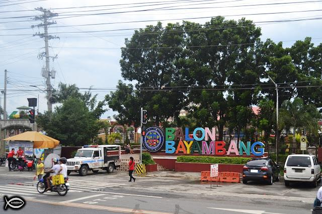
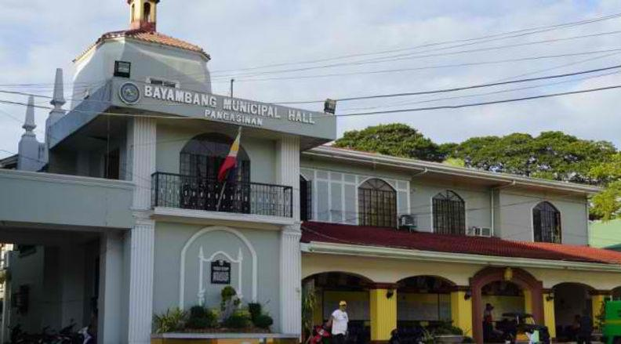

Bayambang Municipal Plaza is a central public square located in the heart of Bayambang, Pangasinan, Philippines. It serves as the main civic and social hub of the municipality, hosting local government offices, cultural landmarks, and community events.

Historical and Civic Significance
The Bayambang Municipal Plaza has been the focal point of civic life in Bayambang, Pangasinan, since the Spanish colonial period. Its central location reflects the traditional town layout, forming a civic triangle with the St. Vincent Ferrer Parish Church and the Bayambang Municipal Hall.
This arrangement emphasizes the plaza's historical role as the heart of governance, religious practice, and social life in the municipality. Over the decades, the plaza has witnessed key municipal events, from official ceremonies to public assemblies, reinforcing its status as a symbol of governance and local identity.
The plaza not only represents the administrative and religious history of Bayambang but also embodies the town's cultural continuity. It stands as a tangible reminder of the municipality's development, linking its Spanish colonial roots to the present-day community.

Features and Layout
The plaza features a spacious open design that accommodates both ceremonial and recreational activities. Landscaped gardens, shaded walkways, and benches provide a comfortable environment for relaxation and social interaction.
Monuments honoring local heroes are strategically placed, giving the plaza a historical and educational dimension. Its layout is versatile, allowing it to host municipal celebrations, public gatherings, processions, and other formal events.
Decorative elements such as lamp posts, flowering plants, and small statues enhance its aesthetic appeal. This blend of design and functionality makes the plaza a vital civic and recreational area.

Cultural and Community Role
Bayambang Municipal Plaza is a vibrant center for social, religious, and cultural activities. It serves as the main venue for local festivals, including the feast of Saint Vincent Ferrer and the Malangsi Festival.
These events draw residents and visitors together, showcasing the town's traditions and fostering a strong sense of community pride. Beyond large celebrations, the plaza functions as a daily gathering space for residents.
Through both formal ceremonies and informal daily use, the plaza strengthens communal bonds and reinforces local identity. It remains a symbol of Bayambang's heritage, blending historical reverence with contemporary civic engagement.